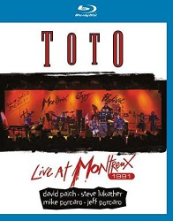

#4732 Toto - Live in Montreux 1991
 
 IMDB-Wertung: 7.6 / 10
IMDB-Wertung: 7.6 / 10  Metascore: 0
Metascore: 0 
01. On The Run (Steve Lukather / John Waybill / David Paich)
02. Kingdom Of Desire (Daniel Kortchmar)
03. Ill Be Over You (Randy Goodrum / Steve Lukather)
04. Africa (Jeff Porcaro / David Paich)
05. Jake To The Bone (Steve Lukather / Jeff Porcaro / Mike Porcaro / David Paich)
06. Red House (Jimi Hendrix)
07. Rosanna (David Paich)
08. I Want To Take You Higher (Sylvester Stewart)
Jahr: 2016
Dauer: 69 Minuten
FSK: 0
Land: Studio: Tonspuren:
Untertitel:
Auflösung: 720p (1280x720) Größe: 4024 MB
Genre: Musik
Regisseur:
Drehbuch: Doug Atchison
Soundtrack:
Darsteller:
- James Donnell Quinn als Himself
- Steve Mathios als Himself
- Xuan Loi Phan als Himself
- Thi Van Khanh Truong als Himself
Datei: X:\Musik\Toto - Live in Montreux 1991 (2016, FSK0, 1280x720).mkv seit 10.11.2016
Festplatte: HD Serien(SU-Z)+Dokus+Musik
 Es gibt insgesamt 134 Filme in der Gruppe 'Musik'
Es gibt insgesamt 134 Filme in der Gruppe 'Musik'